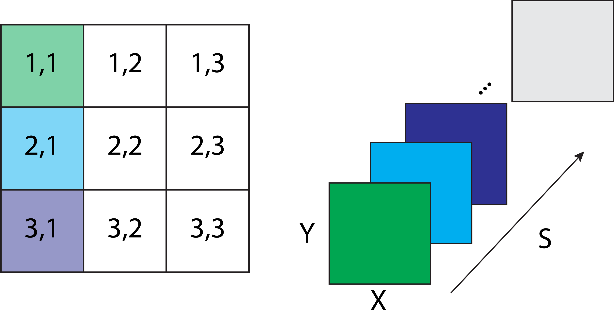
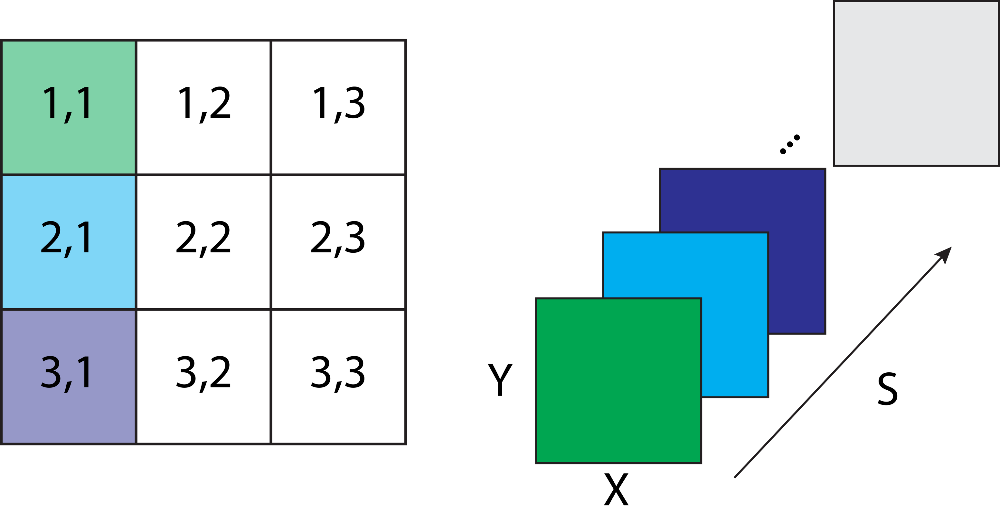

The output data is organized so a frame f in the dimension S corresponds to a correlation map of a given pixel with spatial coordinates i,j where the given pixel is the "seed":

Generates correlation maps from image time series.
This function performs a Pearson's correlation coefficient between the time domain of all pixels from an image time series data with dimensions Y,X,T creating an array of seed-pixel correlation maps (SPCM). Optionally, the correlation values can be Fisher Z-transformed.
Here, a seed pixel correlation map is defined as the 2D matrix of correlation of all pixels from the image with a particular pixel (the seed).
This function accepts only image time series (with dimensions Y,X,T) as input.
The output of this function is a 3D array with dimensions Y,X,S that characterizes a Correlation Map data type. Here, the S dimension contains the correlation maps of all pixels as seed.
The output data is organized so a frame f in the dimension S corresponds to a correlation map of a given pixel with spatial coordinates i,j where the given pixel is the "seed":

If True, a Fisher z-transformation is applied to the Pearson's correlation values. This transformation is frequently used as a processing step to approximate the data to a normal distribution before statistical analysis. If False, the output data is expressed as Pearson's correlation coefficient.